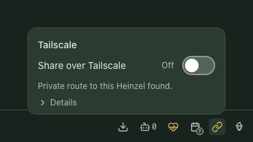
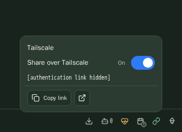
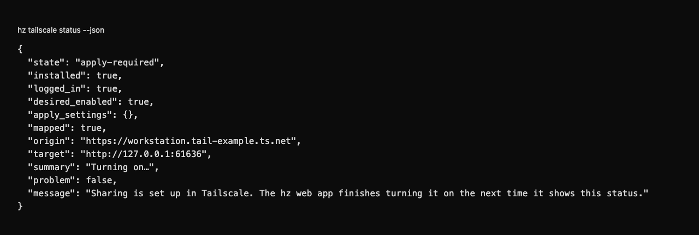
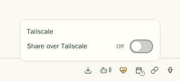
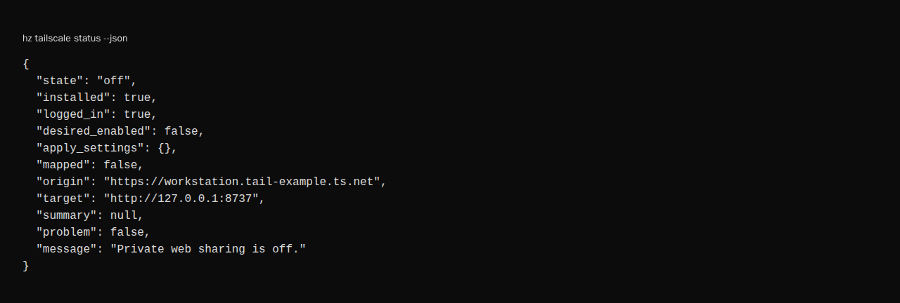

heinzel-tailscale Isolated demonstration profile · Core 0.9.55 · Review these captures before committing. Click an image to inspect it at full size.

UI · An existing private route to this Heinzel is ready to adopt — fictional local Tailscale demo 
UI · One switch adopts the existing private route, then shows Copy link and Open (fictional demo); the capture tool hides the share link as [authentication link hidden] 
CLI · The real CLI sharing status reports apply-required for the mapped demo app. The fixture labels the ephemeral web listener port. 
UI · Turn private sharing off explicitly — fictional local Tailscale demo 
CLI · Then hz tailscale status --json after switching off: not mapped; the target shows the default port 8737 — fictional local Tailscale demo